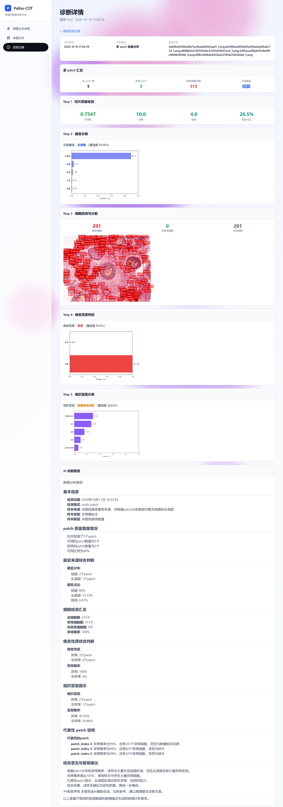

质量检测
对焦、染色、组织占比与可用性评分。
从输入到报告
每一步展示独立结果和关键指标，便于回看、演示与研究验证。
对焦、染色、组织占比与可用性评分。
识别组织来源，呈现 Top-5 概率分布。
定位病变与非病变细胞，输出标注图。
给出正常/异常概率与实验性热力图。
分类组织亚型，展示置信度与概率。
本地模型组织结构化中文研究报告。
系统预览
支持单图引导、多图批量分析、历史回看和报告整理。

本地完整版
完整系统由 FastAPI、PyTorch 和多个视觉/语言模型构成。仓库不收录大体积权重、历史数据库和用户上传内容。
# 配置模型根目录
$env:PATHO_COT_MODEL_ROOT = (Get-Location).Path
# 启动 FastAPI 服务
Set-Location patho_cot_web
python -m uvicorn app:app `
--host 0.0.0.0 --port 8001